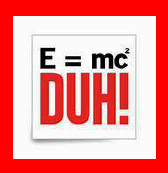

Education: Solving the Quantity Vs. Quality Conundrum
In our incessant pursuit of quantity, we lose the quality. But the opposite extreme would also be destructive: An unhealthy obsession with quality can lead us to get stuck and accomplish nothing.

Educational models fall short when they fail to strike the right balance in answering this question. One hundred years ago, no one went to school beyond age 12, except for gifted students who were destined to join the scholarly, academic elite. Everyone else went to work on the family farm or business as shoemakers, carpenters, and the like. Then the economy started shifting to a knowledge-based economy. One hundred years ago, 70% of people were farmers. Today, 4% are farmers. To survive in a knowledge-based economy, one needs more knowledge. As the knowledge economy grew, more people had to go to school in order to enter the workforce.
The problem is that the system of learning used in schools today is the same system that was used to educate the geniuses when only the geniuses went to school. The system was designed for a student population in which everyone is at the same level. Back then, when only geniuses went to school, it worked. But when you have a group of kids at various levels of social and intellectual and tactical development all mixed together in a system designed for homogeneity, what happens is that system forces the kids into more manageable boxes, creating a mold of the average student, and attempting to sculpt every student in that same mold.
What we ended up with is an education system that by definition breeds mediocrity. A student who finds himself at either end of the spectrum – either exceptionally gifted or “special needs” – is at a disadvantage in such a system. The unique and the gifted are stifled and repressed. The mediocre, or those who learn to contort their uniqueness into the mold of mediocrity, are the ones who thrive.
In the mad dash toward quantity – churning out a certain percentage of students with a specific body of knowledge who bear a set standard and method of mental acuity so that they can attain an acceptable benchmark of functional intelligence that guarantees them a desirable place in the marketplace so they can meet the minimum requirements of financial stability – any semblance of individuality or creativity is tossed aside.
In our incessant pursuit of quantity, we lose the quality. But the opposite extreme would also be destructive: An unhealthy obsession with quality can lead us to get stuck and accomplish nothing.
Einstein taught that you need both and that quantity and quality have a transformative effect one another. But you don’t have to be an Einstein to understand how they complement each other. E=MC2. Energy equals mass times the speed of light squared. In order to attain balance in a relative universe, you need to strike a balance between quality and quantity. Energy, quality, can emanate into the word only by channeling it into the parameters of space and time. Mass, quantity, can create energy, or enhance quality, when it is multiplied and infused with light.
On their own, each can be powerful. Mass movements have the ability to affect instant and decisive change, even when built upon lies and leading to destructive ends. Moments of clarity and epiphany can enable us to overcome the greatest darkness, even if they are never developed or expounded. But only when we fuse the two together, do we touch the purpose of existence – to make goodness and light fill the entire world. We can get there by taking qualitative experiences and funneling them into the finite world, using the tools at out fingertips to let them shine forth. Or we can get there by taking quantitative experiences of mass consciousness and insisting that they be infused with true goodness and light. Either way, we arrive at the same destination.
Reprinted with permission from Exodus Magazine
Harpaz. "Education: Solving the Quantity Vs. Quality Conundrum." Beis Moshiach, no. 910 (January 7, 2014).